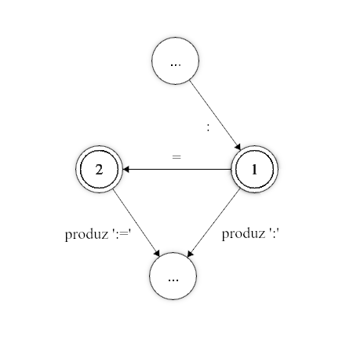

Definição de Aspectos Léxicos
Os aspectos léxicos de um projeto no Web GALS são definidos pela declaração dos Tokens e suas expressões regulares.
O analisador léxico gerado utilizará as expressões regulares dos Tokens para a criação de um Autômato Finito com múltiplos estados finais, cada um deles correspondendo a um dos Tokens declarados.
Expressões Regulares
O coração de todo analisador léxico está nas expressões regulares. Uma expressão regular é uma regra que define uma sequência de passos a casar com uma entrada, retornando se sim ou não a entrada está de acordo com a regra.
Esta tabela ilustra as possibilidades de expressões regulares suportadas pela ferramenta. Quaisquer combinações entre estes padrões é possível. Espaços em branco são ignorados (exceto entre aspas).
| Expressão | Reconhece |
|---|---|
a | reconhece a |
ab | reconhece a seguido de b |
a|b | reconhece a ou b |
[abc] | reconhece a, b ou c |
[^abc] | reconhece qualquer caractere, exceto a, b e c |
[a-z] | reconhece a, b, c, … ou z |
a* | reconhece zero ou mais a’s |
a+ | reconhece um ou mais a’s |
a? | reconhece um a ou nenhum a. |
(a|b)* | reconhece qualquer número de a’s ou b’s |
. | reconhece qualquer caractere, exceto quebra de linha |
\123 | reconhece o caractere ASCII 123 (decimal) |
Os operadores posfixos *, + e ? tem a maior prioridade. Em seguida está a concatenação e por fim a união |. Parênteses podem ser utilizador para agrupar símbolos.
Os caracteres " \ | * + ? ( ) [ ] { } . ^ - possuem significado especial. Para utilizá-los como caracteres normais deve-se precedê-los por , ou colocá-los entre aspas. Qualquer seqüência de caracteres entre aspas é tratada como caracteres ordinários.
| Expressão | Reconhece |
|---|---|
\+ | reconhece + |
"+*" | reconhece + seguido de * |
"a""b" | reconhece a, seguido de “, seguido de b |
\" | reconhece “ |
Existem ainda os caracteres não imprimíveis, representados por seqüências de escape
| Expressão | Reconhece |
|---|---|
\n | Line Feed |
\r | Carriage Return |
\s | Espaço |
\t | Tabulação |
\b | Backspace |
\e | Esc |
\XXX | O caractere ASCII XXX (XXX é um número decimal) |
Todas as regras listadas acima podem ser concatenadas em uma unica e longa regra. Por exemplo, [a-zA-Z_][0-9a-z&]+ irá reconhecer qualquer palavra que começe com uma letra (tanto maiúscula como minúscula) ou underline,
seguido de qualquer número, letra minúscula ou o caractére ‘&’, zero ou mais vezes, como Z0a02be& ou _aazz, mas não 00ABC.
Tokens
Antes de se mostrar como são declarados os Tokens é preciso se dar uma pequena explicação sobre o funcionamento do analisador léxico.
O analisador gerado funciona simulando um autômato finito, rodando em cima de uma tabela de transições. O analisador verifica o próximo caractere da entrada e o estado atual do autômato (inicialmente zero) e move o autômato para seu próximo estado.
Se eventualmente o autômato chegar a um estado final, sempre correspondente a um token, ele ainda não pode dar a análise deste token como concluída, pois é preciso tentar identificar a sequência de caracteres mais longa possível (um analisador para Pascal não pode identificar o token : no momento que encontrar este caractere, ele precisa continuar, pois pode ser que o token seja :=).

Assim, o analisador somente para quando não consegue mais prosseguir na tabela de transições. Se durante este processo ele encontrou algum token, ele produz o token correspondente ao último estado final alcançado (a seqüência mais longa de caracteres). Se nenhum token foi encontrado então um erro léxico é gerado.
Token a partir de uma Expressão Regular
As expressõs a seguir devem ser digitadas na janela de “Tokens” do Web GALS.
Esta é a forma mais genérica de se definir um token. Ela consiste em por um identificador, que irá representar o Token, ao lado de uma expressão regular, separados por :.
[identificador] : [expressão regular]
Sempre que o analisador identificar a expressão regular ele produzirá o token correspondente.
Token com Contexto
Pode-se especificar para um token uma segunda expressão regular, chamada neste caso de contexto.
[identificador] : [expressão regular] ^ [expressão de contexto]
Se um contexto for especificado, sempre que o token vier a ser identificado, o analisador tenta analisar a expressão de contexto. Se a expressão não puder ser encontrada após o token o analisador considera este token como inválido (como se chegasse a um ponto sem transição possível na tabela de transições). Esta construção pode ser entendida como: somente identifique este token se, depois dele, for possível identificar a expressão de contexto. O contexto é analisado, porém não é consumido pelo analisador léxico.
Note
A expressão de contexto também precisa ser um Token válido, já que ela não é consumida pelo Token definido pela expressão principal, e é processado posteriormente uma segunda vez.
Ou seja, um Token
M : "a"^"b"precisa ser acompanhado de um segundo TokenN : "b"para que a entradaababseja reconhecida comoMBMB.Caso o Token
Nou algo equivalente não seja definido, após processarab, o autômato irá consumir somentea, deixandobna fita de entrada, porém combsem um Token definido isto gerará um erro de caractére inesperado.
Warning
Não é recomendado o uso de negação quanto no contexto (eg.:
M : "a" ^ [^b]), pois não funciona corretamente.
Token Não-Retrocedente
Podem existir casos em que ao ser encontrado um erro (nenhuma transição possível), este deve ser reportado de qualquer forma, mesmo que durante a análise deste token tenha-se encontrado outros tokens validos possíveis.
Por exemplo: em uma linguagem com comentários delimitados por (* e *), um comentário não fechado seria um erro. Este erro fará com que o analisador verifique se durante a análise ele não encontrou nenhum outro token valido. Se a linguagem também possuir a declaração de um token correspondente a (, o analisador o teria encontrado nesse processo, o retornaria, continuando a análise a partir do * do comentário. Para prevenir isto, o token correspondente ao comentário deveria ser declarado desta forma:
[identificador] :! [expressão regular]
Um token declarado deste modo não verifica outros tokens validos encontrados antes em caso de erro.
Por exemplo, considere as seguintes regras de lexação:
TEXT : "loremipsum"
OPEN : "("
CLOSE : ")"
MUL : "*"
COMMENT : "(*" [^ "*" ]* "*)"
WS : [\s\t\r\n]*
Se analisarmos a entrada (loremipsum)(* loremipsum loremipsum * ), o analisador léxico irá reconhecer os Tokens OPEN TEXT CLOSE OPEN MUL WS TEXT WS TEXT WS MUL WS CLOSE, ao ínves
de lançar um erro de lexação devido a um comentário não fechado. Porém se mudarmos a linha 5 para COMMENT :! "(*" [^ "*" ]* "*)", somente OPEN TEXT CLOSE serão reconhecidos, seguido de um
erro, já que após ver (*, o lexador ira se forçar a reconhecer um COMMENT, e não tentara reconhecer algum outro token com base nessa entrada caso haja falha.
Token Ignorado
Nos três casos, o identificador pode ser omitido (a declaração começa diretamente pelo : ou :!).
Quando o identificador não é fornecido, o analisador gerado passa a ignorar tokens gerados pela expressão regular correspondente.
Deste modo pode-se fornecer expressões para comentários e caracteres de espaço em branco (espaço, quebra de linha, tabulação, etc.) para que o analisador gerado ignore.
Token a partir do identificador
Pode-se declarar um token apenas declarando um identificador para ele. Esta é a forma mais simples de se declarar um token, porém a menos flexível. Pode-se utilizar duas formas de identificadores:
- Identificadores Normais
- Qualquer sequência de caracteres entre aspas (
")
Um token declarado desta forma irá gerar um autômato finito que identifica o próprio identificador, ou seja, sempre que o analisador encontrar a sequência de caracteres relativa ao identificador ele produzirá o Token correspondente. Por exemplo:
begin identificaria begin, e != identificaria !=.
Definindo Token como caso especial de outro Token
Pode-se definir um token como sendo um caso particular de um outro token base. Nestes casos, sempre que o analisador identifica o token base, ele procura pelo valor do token em uma lista de casos especiais. Se for encontrado, o caso especial é retornado, senão é produzido o token base. Esta declaração é feita da seguinte forma:
[identificador] = [token base] : [valor]
onde token base é um token declarado previamente, e valor é uma sequência de caracteres entre aspas.
Como pode-se deduzir, esta construção é especialmente útil para a declaração das palavras reservadas de uma linguagem. Em geral, as palavras reservadas seguem o mesmo padrão dos identificadores. Utilizar esta construção faz com que o autômato gerado seja bem menor de que se cada caso especial fosse declarado como um token comum. A lista dos casos é gerada em ordem, e a localização de um caso é feita por busca binária.
Definições Regulares
Também é possível predefinir uma expressão regular e usa-la posteriormente. No mesmo painel onde se encontra o gerenciador de projetos, há um campo de texto onde é possível escrever definições regulares.
Uma definição sempre segue a forma:
[identificador] : [expressão regular]
Cada linha do campo de definições pode conter apenas uma definição regular.
As definições aqui declaradas poderão ser utilizadas em outras expressões regulares, utilizando seu identificador entre { e }.
Note
Não é possível usar definições regulares dentro de listas (eg.:
[{A}{B}]).
Exemplos
Segue então um exemplo de definições regulares e Tokens característicos de um pequeno projeto de linguagem.
Definições Regulares
L : [A-Za-z]
D : [0-9]
WS : [\ \t\n\r]
COMMENT : "(*" [^ "*" ]* "*)"
Tokens
//pontuação
"("
")"
";"
//tokens
ID : {L} ( {L} | {D} | _ )*
NUM : {D}+
//palavras chave
BEGIN = ID : "begin"
END = ID : "end"
IF = ID : "if"
THEN = ID : "then"
ELSE = ID : "else"
WHILE = ID : "while"
DO = ID : "do"
WRITE = ID : "write"
//ignorar espaços em branco e comentários
: {WS}*
:! {COMMENT}
Estas definições léxicas reconhecem:
id: identificadores alfanúmericos que não começam com números e underline.num: números de múltiplos dígitos.- Tokens de palavra chave, que são um caso especial do Token
id. - Whitespace e comentários são reconhecidos mas ignorados.
Se analisarmos com estas definições a seguinte entrada:
begin
while true do
if condition() then
write(42);
end
end
end
obteremos a seguinte saída:
| Token | Lexeme | Posição |
|---|---|---|
| BEGIN | begin | 0 |
| WHILE | while | 8 |
| ID | true | 14 |
| DO | do | 19 |
| IF | if | 26 |
| ID | condition | 29 |
| “(” | ( | 38 |
| “)” | ) | 39 |
| THEN | then | 41 |
| WRITE | write | 52 |
| “(” | ( | 57 |
| NUM | 42 | 58 |
| “)” | ) | 60 |
| “;” | ; | 61 |
| END | end | 67 |
| END | end | 73 |
| END | end | 77 |